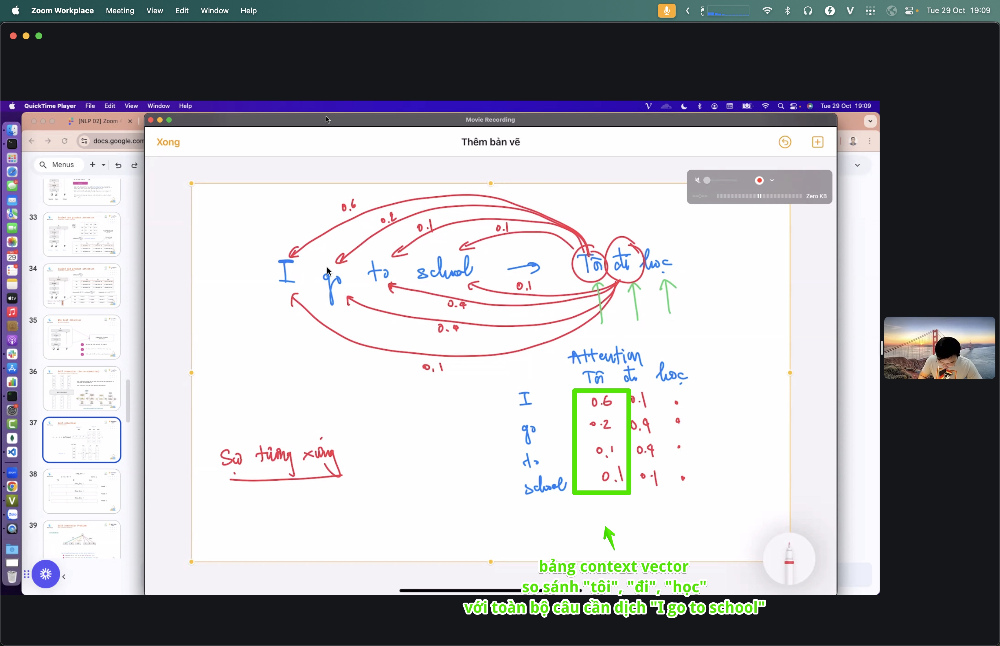

Concept · attentionslides + app
Attention · which tokens matter
Query · Key · Value — contextual mixing across tokens.
notes/attention.md→
slides→
working app
01AI Lab
Attentionidea
Ý chính
remember
Attention
Query · Key · Value — contextual mixing across tokens.
topics
Keywords
attention, QKV, transformer
Đọc kèm: notes/attention.md
02notes/attention.md
Minh họaself-attention.jpg
Hình minh họa

03AI Lab · minh họa
Minh họaattention-table.jpg
Hình minh họa

04AI Lab · minh họa
Minh họacross-attention.jpg
Hình minh họa

05AI Lab · minh họa
Attentionví dụ
"Nó" chỉ ai?
câu
con chó đuổi con mèo vì nó đói
Attention để chữ "nó" tự nối về "chó" — nhìn đúng chỗ trong câu.
Q · K · V
Ba vai
Q hỏi "cần gì", K "có gì", V "nội dung". Q khớp K cao → lấy nhiều V của từ đó.
06notes/attention.md
Attentionlưu ý
Self / cross · multi-head
phạm vi
Self vs cross
Self = các từ trong cùng câu nhìn nhau; cross = câu đích nhìn câu nguồn (vd dịch máy).
multi-head
Nhiều góc nhìn
Mỗi đầu bắt một loại quan hệ (ngữ pháp, chủ đề…) chạy song song rồi gộp lại.
07notes/attention.md
enddemos/attention/app